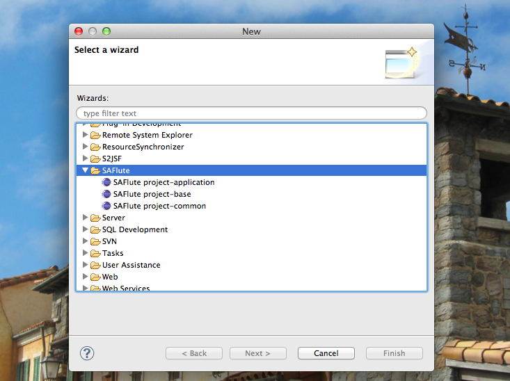
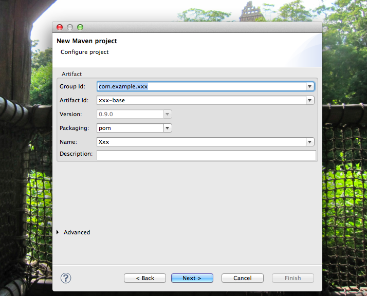
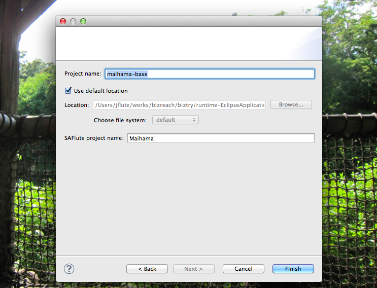
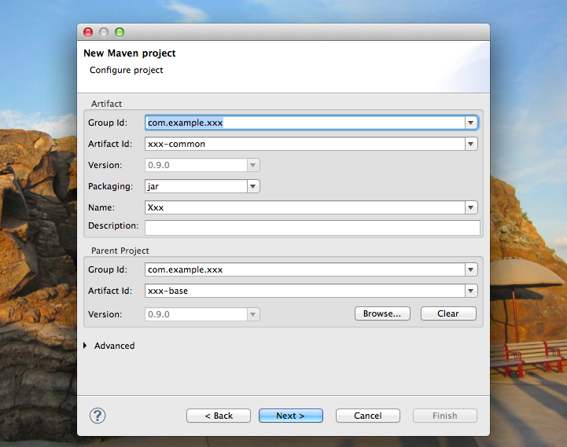
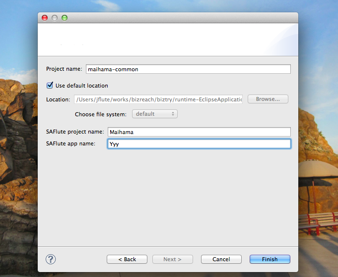
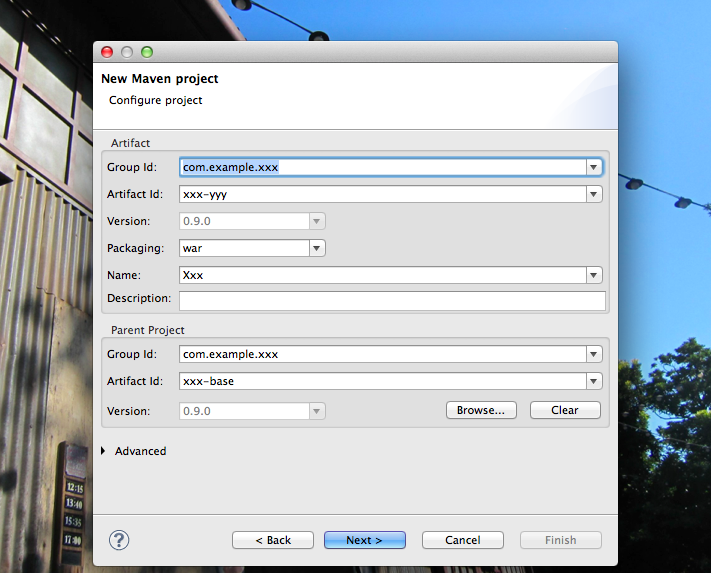
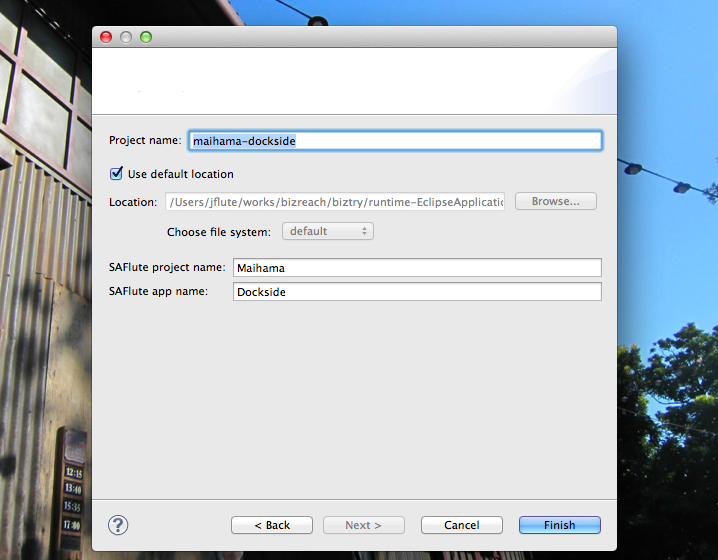

SAFlute環境セットアップ
SAFluteを使ったプロジェクトの環境をセットアップする方法について。
- ベタな方法とEclipseプラグイン
- SAFlute Template
- baseプロジェクトの作成
- commonプロジェクトの作成
- web-domainプロジェクトの作成
- DBFluteを動かしてみましょう
- DB設計して、自分用で再自動生成
- さらにweb-domainを追加する場合
ベタな方法とEclipseプラグイン
大きく二つの方法があります。
ベタな方法
Maihamaプロジェクトをコピーして、Maihama や Dockside な部分をどんどん置換していく方法です。大変ですがとても単純ですし、README_ja.txt に詳しく書いてありますので、ここではもうこれだけにしておきます。(プラグインを使う方がオススメ)
Eclipseプラグイン
有志の方が提供している、SAFluteを使ったプロジェクトを作成するためのEclipseプラグインを利用することができます。 SAFlute Template と言います。
ベタな方法に比べはるかに簡単にプロジェクトを作れるようになっていますので、ぜひご利用ください。 このページでは、この "SAFlute Template" を使った手順をメインに説明します。
いずれにせよ、Maihamaプロジェクトは見ること
ただ、セットアップ後の細かい微調整などのためにも、Maihamaプロジェクトの README_ja.txt は必ず読んでおくと良いでしょう。 また、プラグインでは調整できない部分もありますので、最終的にはMaihamaプロジェクトを参考に理解を深めてアドリブで調整できるようにすると良いでしょう。
SAFlute Template
プロジェクト構成
既に実践的な構成のプロジェクトを作成できます。
- baseプロジェクト
- pom.xmlの共通定義を統括するベースプロジェクト
- commonプロジェクト
- 共通ライブラリのプロジェクト、DBFluteの自動生成クラスなど
- web-domainプロジェクト
- WEBアプリのプロジェクト、複数作成可能
SAFlute Template のインストール
TODO jflute jar?
baseプロジェクトの作成
ウィザードの選択
パッケージ・エクスプローラーで右クリックして "New" - "Other..." を選択すると、様々なプロジェクト作成の項目の中から SAFlute のウィザードを選ぶことができます。
SAFluteTemplate、ウィザードの選択 
{kind=link}
baseプロジェクトのMaven情報の入力
ウィザードの選択で、SAFlute project-base を選ぶと、baseプロジェクトのMaven情報を入力する画面になります。 ここでは、プロジェクト全体のパッケージなどを入力します。
作成した後で修正の利かない重要な項目(★)は、しっかり吟味して入力しましょう。
- Group ID ★
- グループID、このプロジェクトのJavaのパッケージでもある。※Seasarのrootではない
- 例えば、Maihamaプロジェクトであれば、org.dbflute.maihama となる。
- Artifact ID ★
- アーティファクトID、Eclipseプロジェクト名でもある。
- 例えば、Maihamaプロジェクトであれば、maihama-base となる。
- Name
- pom.xmlの name タグの内容、まあ気の利いた感じに
- Description
- pom.xmlの description タグの内容、まあ気の利いた感じに
SAFluteTemplate、baseプロジェクトのMaven 
{kind=link}
baseプロジェクトの作成
Maven情報の入力を終えて Next すると、baseプロジェクトの作成画面になります。
入力されたMaven情報を元に、既にプロジェクト名が入力されるので、基本的には最後に確認をするだけとなります。 想定通りになっていれば、Finishしましょう。
- Project Name ★
- Eclipseプロジェクトの名前。
- 例えば、Maihamaプロジェクトであれば、maihama-base となる。
- SAFlute project name ★
- Javaのクラスやコメントなどで利用されるプロジェクト名。
- 例えば、Maihamaプロジェクトであれば、Maihama となる。
SAFluteTemplate、baseプロジェクトの作成 
{kind=link}
commonプロジェクトの作成
commonプロジェクトのMaven情報の入力
ウィザードの選択で、SAFlute project-common を選ぶと、commonプロジェクトのMaven情報を入力する画面になります。 (要領は、baseプロジェクトの時と同じです)
作成した後で修正の利かない重要な項目(★)は、しっかり吟味して入力しましょう。
- Group ID ★
- グループID、基本的に base プロジェクトと同じ。
- 例えば、Maihamaプロジェクトであれば、org.dbflute.maihama となる。
- Artifact ID ★
- アーティファクトID、Eclipseプロジェクト名でもある。
- 例えば、Maihamaプロジェクトであれば、maihama-common となる。
- Name
- pom.xmlの name タグの内容、まあ気の利いた感じに
- Description
- pom.xmlの description タグの内容、まあ気の利いた感じに
- Parent Project - Group ID ★
- 親プロジェクトのグループID、base プロジェクトのグループIDを入力。
- Parent Project - Artifact ID ★
- 親プロジェクトのアーティファクトID、base プロジェクトのアーティファクトIDを入力。
SAFluteTemplate、commonプロジェクトのMaven 
{kind=link}
commonプロジェクトの作成
ここちょっとポイントです。(見逃さないでじっくり読んでください)
baseプロジェクトの時と同じように、既にいい感じにプロジェクト名が入力されていますが、一つだけ Yyy という名前になっています。 これは、web-domainプロジェクトの名前です。web-domainは複数作成されることが想定されますが、この時点ではとりあえずその一つの名前を指定することが求められます。 具体的には、DBFluteの FreeGen や PropertiesHTML の設定などで利用されます。
例えば、Maihamaプロジェクトの Dockside ドメイン (maihama-dockside) であれば、Dockside となります。(Yyyで作ってしまうと後で修正が大変なのでここでしっかり)
SAFluteTemplate、commonプロジェクトの作成 
{kind=link}
web-domainプロジェクトの作成
web-domainプロジェクトの情報の入力
ウィザードの選択で、SAFlute project-applicatoin を選ぶと、web-domainプロジェクトのMaven情報を入力する画面になります。 (要領は、commonプロジェクトの時と同じです)
作成した後で修正の利かない重要な項目(★)は、しっかり吟味して入力しましょう。
- Group ID ★
- グループID、基本的に base プロジェクトと同じ。
- 例えば、Maihamaプロジェクトであれば、org.dbflute.maihama となる。
- Artifact ID ★
- アーティファクトID、Eclipseプロジェクト名でもある。
- 例えば、Maihamaプロジェクトの Dockside ドメインであれば、maihama-dockside となる。
- Name
- pom.xmlの name タグの内容、まあ気の利いた感じに
- Description
- pom.xmlの description タグの内容、まあ気の利いた感じに
- Parent Project - Group ID ★
- 親プロジェクトのグループID、base プロジェクトのグループIDを入力。
- Parent Project - Artifact ID ★
- 親プロジェクトのアーティファクトID、base プロジェクトのアーティファクトIDを入力。
SAFluteTemplate、web-domainプロジェクトのMaven 
{kind=link}
web-domainプロジェクトの作成
baseプロジェクトの時と同じように、既にいい感じにプロジェクト名が入力されています。
特に問題なければ Finish!
SAFluteTemplate、web-domainプロジェクトの作成 
{kind=link}
DBFluteを動かしてみましょう
DBFluteのダウンロード (クライアントは作成済み)
commonプロジェクトを作成すると、DBFluteクライアントが既にいい感じに作成されています。
ただ、DBFluteモジュールだけは同梱されていないので、EMechaの DBFlute Upgrade ウィザードを使って、DBFluteモジュールだけをダウンロードしましょう。
というか、baseプロジェクトの pom.xml のDBFluteのバージョンが、最新バージョンでなければ、一緒にアップグレードしてしまいましょう。 (アップグレードすると既存クラスがコンパイルエラーになるかもしれませんが、後のクラス自動生成でなくなるはずです)
データベースの設定 (デフォルトMySQL)
デフォルトでは、以下のような設定になっています。
- DBMS
- MySQL
- スキーマ
- プロジェクト名 + db ※Maihamaプロジェクトなら maihamadb
- ユーザー
- プロジェクト名 + user ※Maihamaプロジェクトなら maihamauser
- パスワード
- プロジェクト名 + word ※Maihamaプロジェクトなら maihamaword
これでよければ、特に気にせず次へ進みましょう。
もし、他のDBMSを使ったり、スキーマの名前やユーザー名を変更する場合は、手動で設定ファイルを修正します。 主な修正ファイルは以下の通りです。
- [project-name]_env.properties
- アプリからつなぐDBの設定 ※ローカル、結合、本番と環境ごとに存在 (ひとまずローカルだけでも修正)
- databaseInfoMap.dfprop
- 自動生成ツールとしてのDBFluteがつなぐDBの設定
- replaceSchemaDefinitionMap.dfprop
- ReplaceSchemaがシステムユーザーでつなぐDBの設定 ※利用しないなら設定をコメントアウト
- replace-schema-00-system.sql
- システムユーザーで実行するDDL ※利用しないなら削除
この時点で、ReplaceSchemaできるはず
デフォルトでは、replace-schema-10-basic.sql に Maihama プロジェクトの DDL が入っています。DBの準備ができていれば、この時点で ReplaceSchema を叩いてスキーマを作成できるはずです。
失敗した場合は、何かがおかしいです。ReplaceSchemaのログをみながら直していきましょう。
クラス自動生成してみましょう
スキーマができたら、Manageタスクの regenerate (2番) を叩いてみましょう。 クラスの自動生成が一通りうまく動作するはずです。(ここでは既存のMaihamaクラスが上書きされるだけ)
FreeGenを実行してみましょう
Manageタスクの freegen (12番) を叩いて正常終了することを確認してみましょう。 (ここでは既存のConfigクラスやMessagesクラスが上書きされるだけ)
DB設計して、自分用で再自動生成
ERMaster-b をインストール
maihama-base の environment/eclipse/dropins の中の ERMaster-b.zip を解凍して、利用している Eclipse の dropins ディレクトリに、ERMaster-b ディレクトリごと放り込みます。
[eclipse-root]/dropins/ERMaster-b/eclipse/plugins/...jar というディレクトリ構成になっていればOKです。 Eclipse を再起動してみましょう。Preferences の項目として ERMaster が追加されていればOKです。
※ここでは本家の ERMaster ではなく、改良された ERMaster を利用することを前提とします。
ERMaster-b でDB設計
baseプロジェクトの document/erd/xxxdb.erm を ERMaster-b で開くと、Maimahaプロジェクトのテーブルが存在しています。自分のプロジェクト用に修正しましょう。
※ermファイルが開けない場合は、ERMaster-b のインストールに失敗しています。
ERMaster-b でDDL出力
ひとまずの段階で、ダイアグラムで右クリックして、エクスポートのDDLを選択します。 commonプロジェクトにある ReplaceSchema の replace-schema-10-basic.sql に出力します。 細かい設定などはデフォルトのままでOKです。
DBFluteプロパティを調整
幾つかのDBFluteプロパティを自分のプロジェクト用に修正します。
- documentDefinitionMap.dfprop
- PropertiesHTMLの設定
- freeGenDefinitionMap.dfprop
- FreeGenの設定
- outsideSqlDefinitionMap.dfprop
- applicationOutsideSqlMapの設定
- refreshDefinitionMap.dfprop
- 自動F5の設定
そして、リニューアル
Manageタスクの renewal (1番) を実行します。
Manageタスクが失敗している場合は、それ以前に設定か何か環境がおかしいです。 DBFluteのログをみて直していきましょう。(dfpropを直し忘れてないですか？)
そして、SAFluteの世界へ
リニューアルが成功すれば、Exampleとして存在している既存の会員一覧画面のクラスなどがコンパイルエラーになるかと思います。 ここからは、もう自分の世界ですので、いい感じに修正していきましょう。
※会員一覧画面はすっきり削除してしまってもいいか。ログインのロジックは、適切に直していきましょう。
さらにweb-domainを追加する場合
同じように、プラグイン (SAFlute project-application) から追加します。
ただ、DBFluteの FreeGen や PropertiesHTML などの設定は追加されませんので、手動で追加する必要があります。 主な設定追加箇所は以下の通り。
- documentDefinitionMap.dfprop
- PropertiesHTMLの設定
- freeGenDefinitionMap.dfprop
- FreeGenの設定
- outsideSqlDefinitionMap.dfprop
- applicationOutsideSqlMapの設定
- refreshDefinitionMap.dfprop
- 自動F5の設定
わからなければ、聞いてみましょう
SAFlute自体は DBFlute のメインストリームではないため、細かく環境構築の手順を用意しているわけではありません。 もともと、ソースコードを読んで使い方を学んでいくことを前提としていたもので、パッケージとして広く展開することを想定されたものではありません。
ですが、思ったより反応が良く、利用したいという人がわりと増えてきたため、ちょっとずつドキュメントを整備しています。 とはいえ、やはりきめ細かいドキュメントは用意し切れないと考えています。(あくまで優先度は DBFlute 本体の方が高いため)
例外的な要件に対する救済的な説明もありませんし、手順通りやってうまくいくとも限りません。 DBFlute本体のドキュメントではあまり見かけない "いい感じに" という言葉も連呼されます。
なので、わからなければ遠慮なく質問(フィードバック)してみましょう。
SAFluteを使いたいと言ってくれた人の中には、わざわざ jflute に会いに来てくれた方もいらっしゃいました。 希望があれば、勉強会などでも積極的に話題にしていきたいと思います。